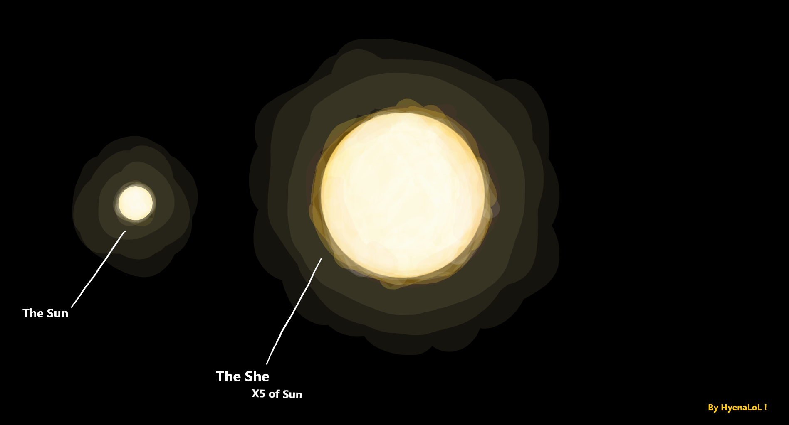
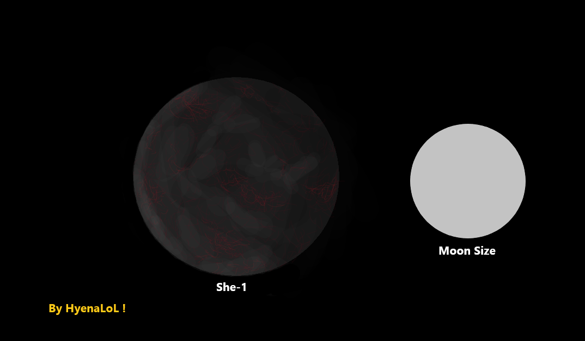
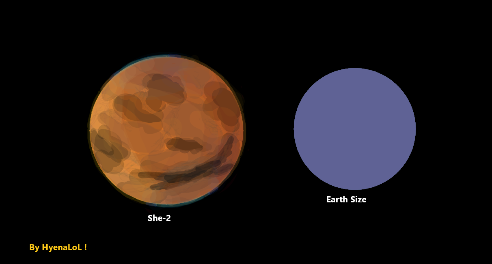
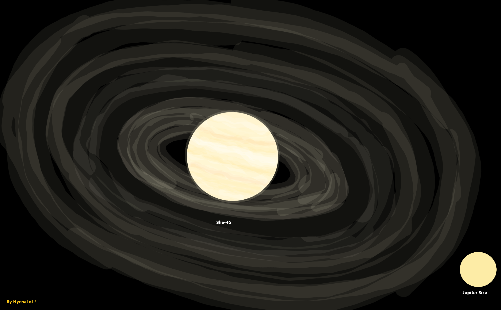
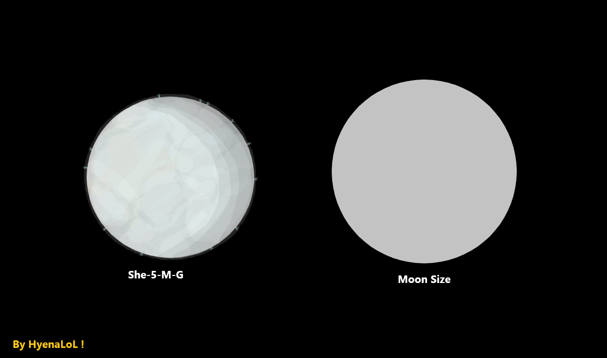

SystemShe -
Content -
- Main of SystemShe.
- Star - She.
- Orbital Zones.
- Planet - She-1.
- Planet - She-2.
- SheWorld.
- Gas Giant - She-4-G.
- Moon - She-5-M-G.
SystemShe -
Overview :
The She System is built around a bright F-class star with five planets, including my world, SheWorld. The system changed significantly after a collision between two gas giants, which altered the orbits and climates of several planets specifically those in the green and blue zones.
Structure :
System includes: The Star (She), Planet 1 (She-1), Planet 2 (She-2), SheWorld (She-3), A super gas giant (She-4), An icy moon (She-5).
Star She -

Class :
F - very bright and hotter than the Sun.
Size :
~5 times larger than the Sun.
Color :
Bright orange-white.
Age :
Middle-aged, not young, not old, a stable maiden.
Behavior :
Extremely stable for its class, low flare variability, smooth radiation spectrum, provides steady conditions in the habitable green zone.
Features :
High brightness strongly illuminates nearby planets, stability supports the development of complex ecosystems.
Orbital Zones -
Inner Red Zone (1-2 a.u.) :
Too hot and too bright, high radiation, large number of meteorites due to the star's gravity and the inner asteroid belt.
Middle Green Zone (3-5 a.u.) :
Range where life is possible, SheWorld moves through this zone on an elliptical orbit.
Outer Blue Zone (5+ a.u.) :
Cold region, contains the outer asteroid belt.
She-1 -

Type :
Rocky deep-core planet, similar to Mercury or the Moon.
Size :
Approximately the size of Earth's Moon.
Location :
Positioned in the Red Zone, on the central orbital ring, not extremely close to the star, but still far from the Green Zone.
Orbit :
Orbital period ~2/6 of a year (one third of an Earth year), axis rotation is slow, causing one side to overheat heavily while the opposite side remains much colder.
Internal Structure :
Small-medium core, rocky deep-layer composition, magma becomes possible at depths of 200-500 meters.
Atmosphere :
Almost nonexistent, only rare bursts of chemical impurities that dissipate quickly, atmosphere does not retain heat, no protection from radiation or meteors.
Color :
Surface is dark black and coal-gray with magma veins.
Surface :
Dark and black rock formations and mountains, numerous cracks, ravines, and caves some leading directly toward magma, surface is heavily cratered, star-facing side extreme heated and partially of the surface melts, opposite side severe cold, star's light is blindingly intense creating sharp deep shadows.
Temperature range :
Hot side ~200 to 600°C, cold side ~-80 to -120°C.
Activity :
Magma lies close to the surface, almost no volcanoes, many caves and fissures.
Conditions :
Weak magnetic field, frequent meteor showers.
She-2 -

Type :
Rocky planet, similar to Mars.
Size :
Slightly larger than Earth.
Location :
Positioned between She-1 and the boundary of the Green Zone.
Orbit :
Orbital period ~4/6 of a year (two-thirds of an Earth year), axis rotation: ~30 hours per full rotation.
Internal Structure :
Medium-sized core, rocky, dry internal composition.
Atmosphere :
Very weak and non-breathable, contains small amounts of sulfur and traces of ammonia, appears as a constant light haze visible from space as a thin smog layer, atmosphere is extremely dusty and dry.
Color :
Light yellowish-blue depending on light angle. Surface color brown and dark orange tones, similar to Mars but darker and more contrast-heavy.
Temperature range :
Hot side ~60 to 150°C, cold side ~-80 to -140°C.
Activity :
Minimal activity, rare ammonia-impurity geysers, occasional volcanoes, frequent dust storms and large-scale dust weather, many ground collapses sudden sinkholes caused by layers of settled dust instead of solid soil.
Conditions :
Weak-medium magnetic field, rare impacts from space objects but when they occur they tend to be large.
History :
She-2 experienced numerous collisions in the past, leaving the surface covered in scars. These impacts created its extremely contrast-heavy, rugged, and sharply defined terrain.
SheWorld -
She-4-G -

Type :
Super gas giant.
Origin :
Formed as the final result of a massive merger between two gas giants. Both original giants formed close enough to each other to exert extreme mutual gravitational pull, eventually collapsing into a single super-giant.
Location :
In the Blue Zone near its central region.
Orbit :
Stable, the planet self-aligned with the star after the merger, axis rotation is gas-like, it have some slow parts and fast parts, slightly tilted axis.
Appearance :
Has an unreal enormous number of rings far more than Saturn, visually resembles a gigantic Saturn but with light Jupiter-like color patterns. Color: creamy, soft, slightly Jupiter-toned, strong resemblance to the famous TRAPPIST gas giant with massive ring systems, rings vary in: thickness / color / and particle composition visible from very far distances due to sheer scale.
Activity :
Gas-like activity with storms, extremely powerful gravity, magnetic field is extremely intense, ring system is the most dominant feature, multiple dense ring layers.
Moons :
Has 1 moon (She-5-M-G) because the gravitational field is too strong for more stable satellites.
Conditions :
Radiation belts extremely strong, space around the planet is turbulent due to magnetic interactions, any small objects entering the region are quickly turns apart or pulls into the rings.
She-5-M-G -

Type :
Moon-sized planet, an icy world similar to Europa.
Size :
Comparable to Earth's Moon.
Location :
Captured into a distant orbit around the super gas giant She-4-G due to its extreme gravity, the planet is heavily dependent on the gas giant tidal forces dominate its internal activity.
Orbit :
The planet was pulled into a far orbit around She-4-G due to the giant's overwhelming gravity, orbital path is stable but deeply controlled by the gas giant, axis rotation is slow.
Internal Structure :
Ice crust on the surface, liquid interior beneath the ice (subsurface oceans), internal heating caused by tidal stress from the gas giant.
Atmosphere :
Very thin but present, mostly composed of vapor from geysers, light almost transparent haze around the planet.
Surface :
Fully icy exterior, numerous geysers erupting from cracks in the ice, surface constantly reshaped by tidal forces, dark fractures and long ice scars visible from orbit.
Activity :
Weak magnetic field, strongly influenced by the gas giant's massive magnetosphere.